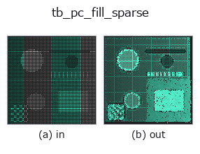

typed op• データ種: points → points
• 呼び出し: fullseye.apply(img, "tb_pc_fill_sparse", a=0.5, b=0.5) (2-D は 1 画像 + 2 スカラつまみ a,b∈[0,1] のモデル)

*図は合成の入力 128×128 で実際に走らせた出力。左が入力、右が出力。点群は上から見た散布(明るさ = z)、1-D 列は折れ線、体積は z 方向の最大値投影、動画は中央フレーム、複素画像は振幅、絵にならない返り値は値そのもの。*
つまみ a を振る(0.1 / 0.5 / 0.9、もう一方は既定):
▸ tb_pc_fill_sparse: knob a sweep (docs site)
*つまみ b は出力を変えない(実測: 0.1 / 0.5 / 0.9 で同一)。*
段階(前置きの op → この op。左から順):
▸ tb_pc_fill_sparse: stages (docs site)
別の画像でも(合成シーン / 写真 / 硬貨。上段が入力、下段がその出力。つまみは既定):
▸ tb_pc_fill_sparse: other inputs (docs site)
局所間隔が *spacing* を超える箇所に、局所 PCA 平面上で点を追加する（`points`）。
> 以下の詳細説明は原文のままです —— 要約と見出しは訳出済み。
For every point whose distance to its *k*-th neighbour exceeds *spacing*,
the segments to those neighbours longer than *spacing* are subdivided at
*spacing* intervals; the new points are projected onto the plane fitted
(PCA) to the point's neighbourhood so they follow the surface rather than
cut chords across it. The original points are kept; the result is then a
cloud whose spacing is ≤ target almost everywhere (pass it to
:func:pc_poisson_disk to remove the duplicates a shared edge creates —
:func:pc_density_equalize does both).
Typed bridge of the 3d op `pc_fill_sparse into the 2-D evolution registry: the same implementation, called under the op(v, a, b) convention. a drives k (default 8); b` is unused.
• サンプルデータ カタログ(DL URL / ライセンス) — 2-D は skimage.data(BSD/public)+ 合成、3-D は実データ源(Stanford/PDS 等)の DL URL。
• 演算子の来歴・参考文献 — この op 族の元になった研究/手法の出典。
下のプログラムは実際に走ることを確かめてある(図と同じ入力)。Studio のヘルプではこのブロックがボタンになり、その場で読み込んで実行できる。
img_to_points 0.50 0.50 tb_pc_fill_sparse 0.50 0.50
▸ Load this pipeline · Load & run
次の例は元の台帳 op pc_fill_sparse を呼ぶもの。この橋渡し op は同じ実装を fn(v, a, b) 規約に合わせただけなので、挙動はそのまま当てはまる(呼び出し形だけ違う)。
• mesh_resolution_demo — py -3.11 examples_3d/mesh_resolution_demo.py
points を入力に取れる)identity · tb_points_to_voxel · tb_estimate_point_normals · tb_iss_keypoints · tb_angle_3points · tb_project_points · tb_render_point_depth · tb_statistical_outlier_removal
typed)tb_points_to_voxel · tb_estimate_point_normals · tb_iss_keypoints · tb_angle_3points · tb_project_points · tb_render_point_depth · tb_statistical_outlier_removal · tb_radius_outlier_removal
*Provenance: ops.py — 2D operator registry. この per-op ノートは tools/opdocs.py md が自動生成(手編集しない)。*
© 2026 Kazufumi Furuse — Fullseye operator documentation. Licensed under Apache-2.0.
{kind=link}
{kind=link}
{kind=link}